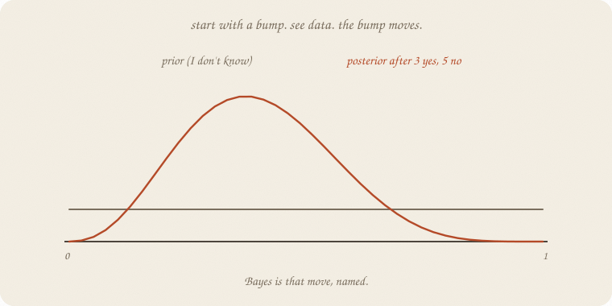
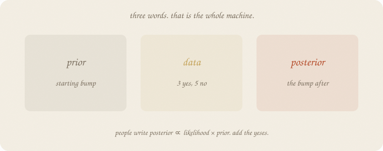
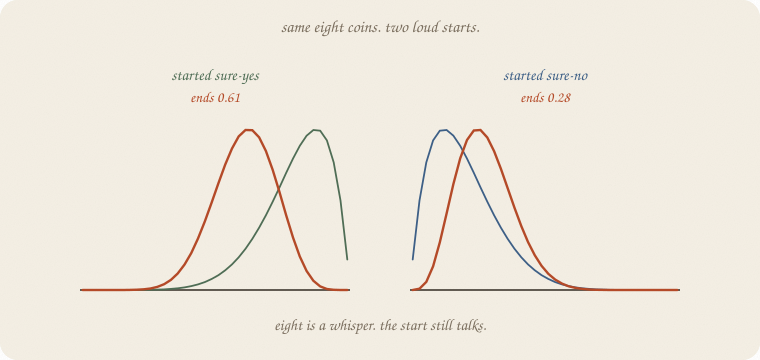
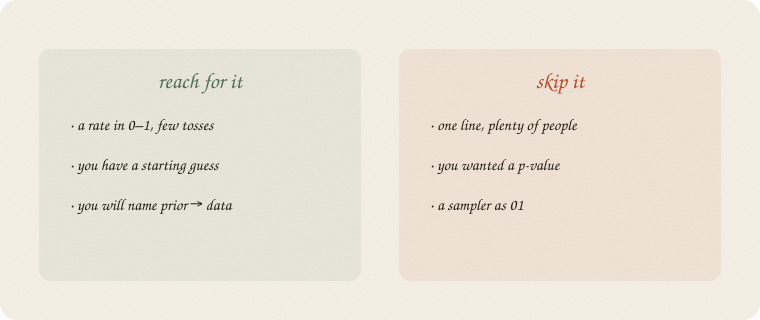

datazines · a sketchbook

Read 02 beta first. Same eight coins, house seed 7, true P = 0.6. Beta was the bump. This notebook is the move: start → see → bump after.
When you cannot add, 02 MCMC walks the height.
Flip it like a notebook. One page = one idea. Done.
02 beta: start Beta(1, 1). See 3 pass, 5 fail. Become Beta(4, 6). Mean 0.50 → 0.40.
That is Bayes. Three words:

| word | in this story |
|---|---|
| prior | the bump before the eight coins |
| data | 3 yes, 5 no |
| posterior | the bump after |
People write:
posterior ∝ likelihood × prior
Ugly. Friendly: how well the data fit this P times where you started. For a coin and a beta, that product is “add the yeses to α, the nos to β.” You already did it.
The likelihood is P(these eight | this P). Three yes and five no like P = 0.4 more than P = 0.8 (0.28 vs 0.01). The prior is the starting bump. Multiply, get the posterior. Beta makes the multiply a plus.
The ordinary guess from eight coins: 3 / 8 = 0.375. One number. No shoulders.
The posterior Beta(4, 6): mean 0.40, 5% at 0.17, 95% at 0.66. Still a wide stick. Eight is a whisper. The point 0.375 pretends it isn’t.
A t-test asked “could leftover have faked this number?” (01 t-test). Bayes asks a different question: where does P like to sit, after I started somewhere and then saw the coins? Not a p. A bump.
You can still report a mean. You should also report the width.
Same eight coins. Two loud priors.

| start | mean before | mean after | 5%–95% after |
|---|---|---|---|
| Beta(1, 1) shrug | 0.50 | 0.40 | 0.17–0.66 |
| Beta(2, 2) mild half | 0.50 | 0.42 | 0.20–0.65 |
| Beta(8, 2) sure-yes | 0.80 | 0.61 | 0.42–0.79 |
| Beta(2, 8) sure-no | 0.20 | 0.28 | 0.12–0.46 |
Truth was 0.6. A sure-yes start still ends near 0.61. A sure-no start ends at 0.28 — eight gloomy coins plus a gloomy start. The prior is not free. Write it down. If you cannot defend Beta(8, 2), don’t use it.
More tosses, the start matters less. That is the deal, not a scandal.
This notebook has no walk. Beta in, coins, beta out. Closed.
When the unknown is a slope, or ten Ps, or a bump that is not beta, you cannot add. Then you walk the posterior with leftover as a height — 02 MCMC, after 01 gradient descent.
Logistic still estimates P from hours without a prior. Plenty of people, one S: stay there. Bayes pays rent when the pile is small or the start is real (last year’s pass rate, a doctor’s base rate).
If you keep only one thing:
prior = starting bump. data slides it. posterior = the bump after.
Same tosses as 02 beta. House seed 7. True P = 0.6. Four starts, four posteriors.
import numpy as np
from scipy.stats import beta
rng = np.random.default_rng(7)
tosses = rng.binomial(1, 0.6, 8)
yes, no = int(tosses.sum()), int(8 - tosses.sum())
print("tosses", tosses.tolist(), " yes", yes, " no", no)
print("ordinary guess yes/n =", round(yes / 8, 3))
def show(a, b, title):
d = beta(a, b)
print(f"{title:28s} mean {d.mean():.3f} 5% {d.ppf(0.05):.3f} 95% {d.ppf(0.95):.3f}")
show(1, 1, "prior Beta(1,1)")
show(1 + yes, 1 + no, "post Beta(4,6)")
show(2, 2, "prior Beta(2,2)")
show(2 + yes, 2 + no, "post Beta(5,7)")
show(8, 2, "prior Beta(8,2) sure-yes")
show(8 + yes, 2 + no, "post Beta(11,7)")
show(2, 8, "prior Beta(2,8) sure-no")
show(2 + yes, 8 + no, "post Beta(5,13)")
tosses [0, 0, 0, 1, 1, 0, 1, 0] yes 3 no 5
ordinary guess yes/n = 0.375
prior Beta(1,1) mean 0.500 5% 0.050 95% 0.950
post Beta(4,6) mean 0.400 5% 0.169 95% 0.655
prior Beta(2,2) mean 0.500 5% 0.135 95% 0.865
post Beta(5,7) mean 0.417 5% 0.200 95% 0.650
prior Beta(8,2) sure-yes mean 0.800 5% 0.571 95% 0.959
post Beta(11,7) mean 0.611 5% 0.420 95% 0.788
prior Beta(2,8) sure-no mean 0.200 5% 0.041 95% 0.429
post Beta(5,13) mean 0.278 5% 0.124 95% 0.461
Shrug → 0.40, wide. Sure-yes → 0.61 (truth was 0.6 — luck plus a loud start). Sure-no → 0.28. Ordinary 3/8 = 0.375 is the shrug posterior’s neighbor, with no shoulders. ppf prints the percentiles of the bump (5% and 95%), not a t-test interval.
| word | meaning |
|---|---|
| prior | starting bump |
| data / likelihood | how well these coins fit this P |
| posterior | bump after the coins |
| β in, coins, β out | add yeses — conjugate |
| width | how unsure you still are |
Also called (in a room):
| here | there |
|---|---|
| prior | starting costume |
| posterior | updated belief |
| likelihood | P(data | P) |
| MLE | yes/n, no bump |

Reach for it when the unknown is a rate, the pile is small, and you can defend a starting bump.
Skip it when one line and plenty of people already work; you wanted a p (01 t-test); you cannot write the prior down.
Pays you: a bump, not a fake point. The start is visible. Same coins as beta, named.
Costs you: the prior is a choice. Eight tosses leave a wide stick. Not a sampler. Not a slope with ten knobs (that walk is later).
Bayes 01. A starting bump. Next: 02 MCMC — walk the height when you cannot add.
Flip it like a notebook. One page = one idea.